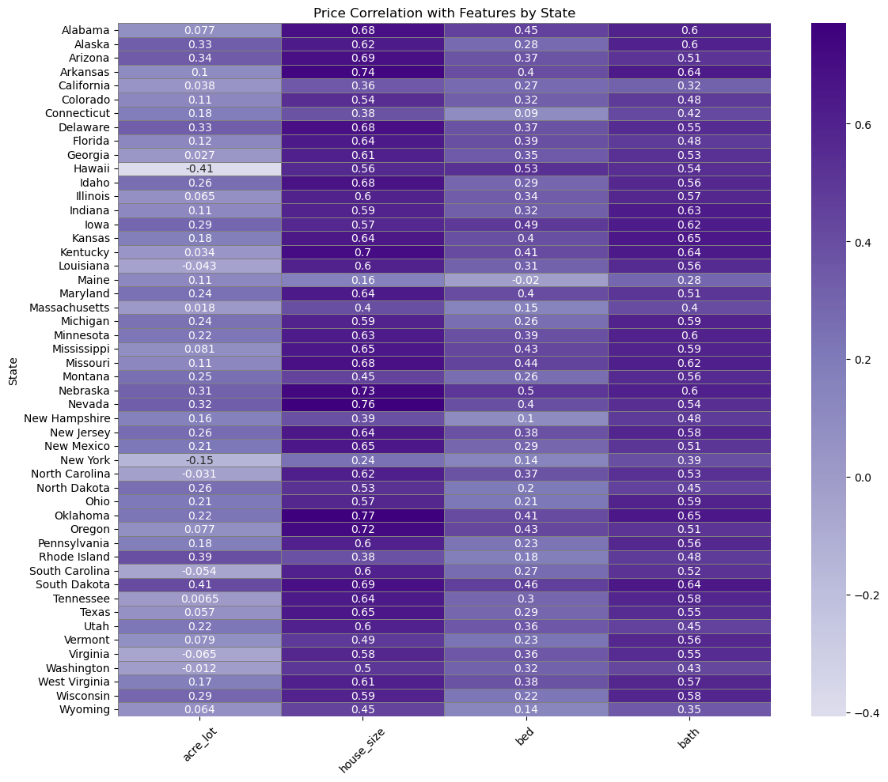

Feature Correlation Heatmap
Snapshot from Python EDA (correlation structure).
What drives home prices across America — quantified across 2.2M+ listings with Python analytics + Tableau storytelling.
The raw dataset was chaotic: missingness across key fields, wild outliers (think impossible beds/baths and massive lots), and inconsistent granularity by city/state.
I stabilized it with a real cleaning pipeline: datatype fixes, livability constraints, IQR-based outlier filtering, minimum city sample thresholds, and a full U.S.-only scope with engineered regional groupings.
Net result: a high-signal dataset built for decision-grade insights — shipped as an interactive Tableau story for fast exploration.
Housing prices in the U.S. don’t just vary — they fracture. The affordability gap across regions raises real questions for buyers, investors, and policy stakeholders.
This project turns that chaos into measurable drivers by connecting property features (size, beds, baths, lot size) with geography and population trends to explain why markets behave so differently.
U.S. Real Estate Listings (2023 snapshot) — 2.2M+ records.
Includes price + property attributes (size, bedrooms, bathrooms, lot size).
BEA API — U.S. & Texas population time series (1969–2023).
Why it matters: it lets the analysis go beyond “prices are high here” into “prices are high here because…”.
Cleaned and validated listings at scale (types, missingness, duplicates, sanity checks).
Computed correlations and compared patterns by region/state. Result: home size consistently dominates as the most informative numeric driver.
Paired Texas housing metrics with BEA population trends to show the growth narrative.
pandas, numpy, os
matplotlib, seaborn, folium
scikit-learn, statsmodels
statsmodels.tsa, ADF, ACF/PACF
beaapi, requests, json
Tableau Public
This project runs on two lanes: Python = proof (reproducible analytics) and Tableau = product (interactive stakeholder-ready narrative).

Snapshot from Python EDA (correlation structure).
Log-normalized regression view of size → price relationship.

k=3 segments derived from standardized price + size.
Population growth paired with long-term price narrative.
This analysis doesn’t just show where homes are expensive — it explains why, quantifies the strongest levers, and packages it into an interactive story that a non-technical stakeholder can actually use.
If you want a fast read: size drives price, regions reshape the rules, and markets naturally segment into tiers — exactly what you’d need for pricing strategy, risk profiling, or policy planning.